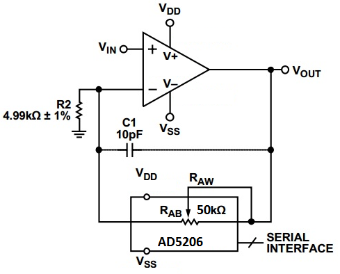
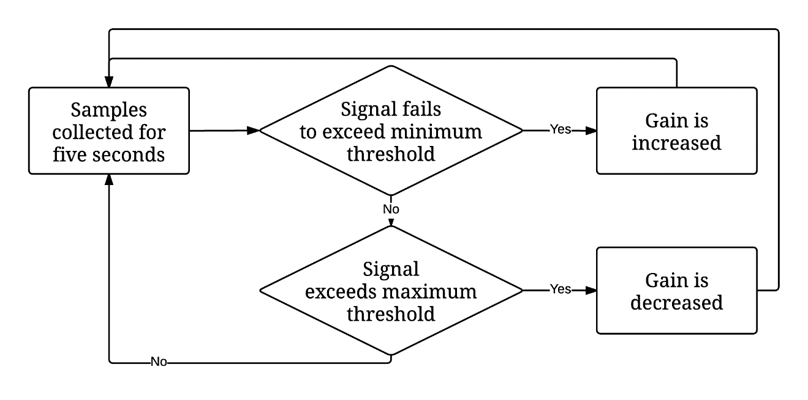
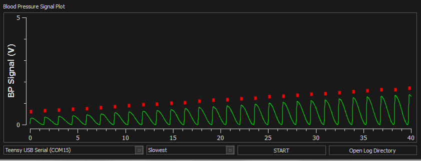

Variable Gain Amplifier with SPI Interface
The analog output signal provided by the Samba Sensor’s pressure measurement system had a very small amplitude compared to the full scale range of the analog to digital converter, so an amplifier was required to increase the signal closer to the full scale range of the ADC.
Unfortunately, the blood pressure of fetal pigs has never been measured from the carotid artery, so it was impossible to determine the correct gain value for the amplifier in advance. This problem was further confounded, because the effect of our chosen anaesthetic on fetal blood pressure was also unknown. To deal with this problem, I opted to build a variable gain amplifier, with an automatic feedback system to maintain a consistent signal amplitude throughout the experiment. A simplified schematic variable gain amplifier circuit is shown below.

This circuit uses a precision operational amplifier, with a digital potentiometer (AD5206) in the feedback path to allow the gain to be adjusted by the microcontroller as required. The digital potentiometer has 256 counts, giving the amplifier an adjustable gain range of 1-11x. This is sufficient for even the lowest possible fetal blood pressures.
Algorithm for Gain Adjustment on the Fly
The input of the gain adjustment is a sample from the ADC taken every 100ms. While each sample is recorded, the algorithm compares it to the minimum signal magnitude and maximum magnitude threshold which are 1/5 and 4/5 of the ADC’s full scale range, respectively. After a five second windowing period, the signal amplitude is compared against the thresholds, to see if any gain adjustment is required. The three possible cases:
- Signal failed to exceed minimum magnitude threshold during the five second window.
- Signal exceeded maximum the maximum magnitude threshold during the five second window.
- The signal exceeded the minimum magnitude threshold, and did not exceed the maximum threshold. In case one, the gain adjustment algorithm gradually increases the gain during each windowing period, as shown in the figure below. The gain increase stops when the signal exceeds the threshold. Same process occurs in reverse for case three. The algorithm is illustrated in the flow chart below.

The actual functioning of the gain adjustment algorithm is illustrated in the plot below. In this test, the triggering system was connected to a function generator which produced a blood pressure waveform with a peak to peak voltage of 700mV. This signal amplitude is based upon recordings on fetal lambs with an identical transducer. As you can see, the gain is very gradually increased in such a manner that it does not disrupt the triggering algorithm, which operates perfectly throughout the duration of the gain increase.
